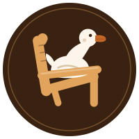

WEB DEVELOPMENT
Adirondack Outdoor Website
Moderne Produktwebsite für eine fiktive Outdoor-Marke. Die Seite verbindet Gestaltung, responsive Layouts, Produktdarstellung, Video, Galerie und einen interaktiven 3D-Konfigurator.
HTML5CSS3JavaScriptThree.js
Live-Demo →